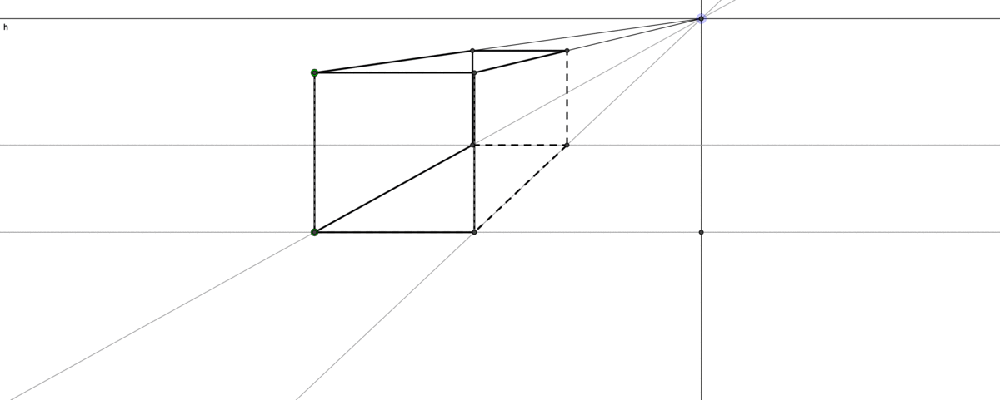
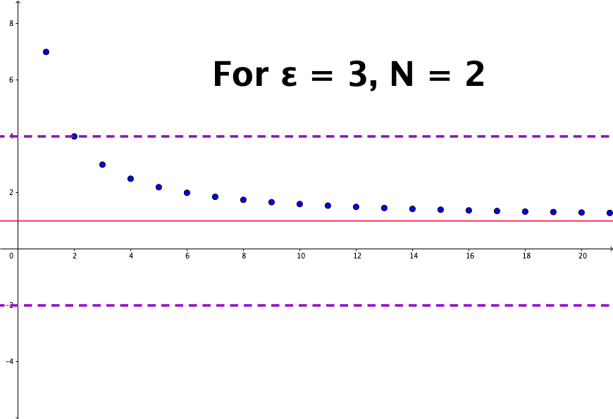
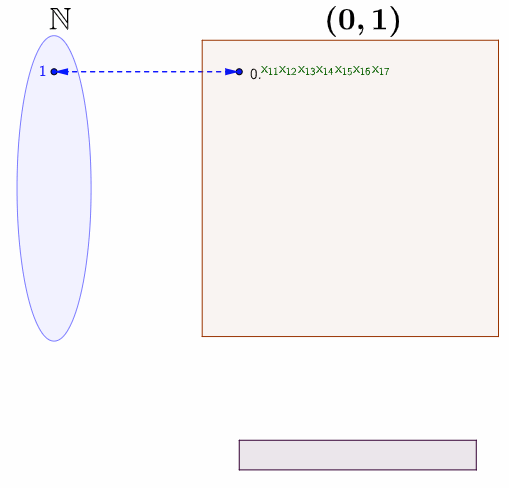
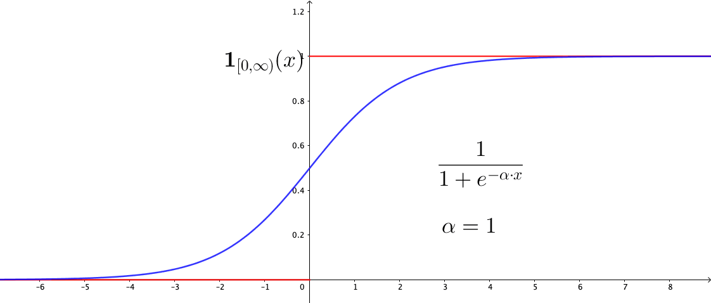
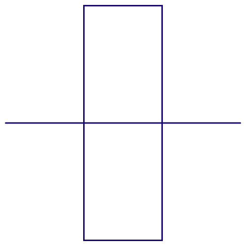

Logic and mathematics abstractly allow us to think in-depth. Axiomatic logic guarantees that we are safe from the problems that make the predicates inconsistent.45 A theory in first-order predicate logic is called inconsistent if a logical contradiction is provable in it. The inference based on the logical system seems suitable for an arbitrary quantitative problem. The consistent inference system is a kind of computing system because the process of searching for proof in logic is a computation. If the problem is computable in a program, it means that we can make the logical inference of it.
So are we done for investigating the structure of inference given this axiomatic logical system? Ideally, I would like to provide you with a sensible answer, True or False, to this question. But the fact is that the question refers to a fundamental issue at which we are going to look: If you have a program of logical inferences, can you make another program that will tell you whether the inferential programs will ever be done or not? This issue is called the halting problem. Unfortunately, Turing proved that there are programs for which you can’t tell whether they will be done, and the halting problem is one of such programs. The result states that there are limitations to what a computer program can compute. The ground of the current axiomatic logical system is analogous to that of the computer program. Thus, we cannot answer the question of whether the structure of logic-based inference is “complete.”
To understand this undecidability, we need to recall that a paradox may come out when a statement refers to itself. For the halting problem, we are simply back to such a suitation that the inference of the system refers to the system itself. We confront the limit of the system. For example, if there were two witnesses of an event but they gave opposite testimony and they both passed away, you know one of the testimony is true but you cannot judge which one. We can find the axiomatic system close to this example. The system has no sufficient information to judge itself as it faces the limit, and within the system enviornment there is no information for finding out the limit. Hence, an undecidability of being consistent in the limit. A famous theorem given by Kurt Gödel states that no mathematical system can provide a proof of its own consistency. The theorem is called the Gödel’s incompleteness theorem.46 A theory is incomplete if it contains a formula which can neither be proved nor disproved. If an arithmetic system is incomplete, then there must be arithmetical sentences that can neither be proved nor disproved by the formal procedures of first-order arithmetic.
The halting problem is an example of this incompleteness theorem. That is, no computational system can provide inference about any statement regarding its self-consistency.
We could prove the consistency of a set of axioms if we could find a feasible procedure of detecting in which the inconsistency roots. Gödel’s theorem implies that it is impossible to test the axioms from which the system is derived because the axioms do not provide enough information to decide the correctness of the test. We have to face the conclusion that any existing axiomatic system may contain certain propositions that are undecidable within that system. The incompleteness motivates us to keep the initiative of being innovative.47 Gödel’s conjecture inspires this optimistic statement. Gödel believes that the human mind is not a consistent finite machine, and its power may exceed that of any finite machine. He conjectured that the task of determining the truth or falsity of any well-grounded mathematical statement, including his own theorem, can be eventually verified by the human’s mind.
The profound impact of the incompleteness theorem has been extended to many aspects of society. The contemporary art dominated by so-called relativism and post-modernism is nothing but evoking the notice of undecidability between the subjective belief and objective truth. An epistemic political view that corresponds to the incompleteness theorem is: No political ideology can be “complete” with the formation constructed by the entities within this ideology. Religious people who claim their belief and doctrine are complete also have to face the challenge of the incompleteness theorem.48 Here completeness refers to the logical formation. But since most of the texts in religion and politics are written in natural language thus they are not feasible for axiomatization. None of these views could be logically verified in theory which gives another incompleteness… All these reflections are the resonance of contemporary culture in Gödel’s work.
The mechanism of proving Gödel’s terrific result is not so far from pointing a seemingly self-consistent statement to some kind of paradox which we have seen in Russell’s paradox. The construction of such a kind of paradox casts a shadow over set theory, whose essentials are due to the role of infinity.
Figure 5.1: Perspective drawing
The infinity is a keystone in thinking about aesthetics, philosophy, nature, or even the existence of God in Christian theology. In perspective drawing, two parallel lines will meet at a point on the horizon. Such a position represents the line at infinity, and it creates a visual solution for a critical geometry problem: an accurate representation of a 3D geometric environment on a flat 2D canvas. When such an infinity exists, the distant objects will be drawn smaller and they become neligible on the line of infinity. This Renaissance drawing technique makes a great progress of visualizng the reality by idealization of the human vision that doesn’t exactly match with what happens in reality.49 The technique trompe-l’œil from propsective drawing can create an illusion of a much deeper space than the actual stage. It also provides the initial premise for the subsequent development of autonomous space in its own right, which is now embodied in the technologies of virtual reality and computer imaging. Unlike art, theology has a collapse of order. The dominated western belief in the Middle Ages was that all power is ultimately from God. St Thomas Aquinas, a Dominican friar and a classic exponent of papal philosophy in the Middle Ages, gave five proofs of God’s existence in his book Summa Theologiae. One of them is the argument of the unmoved mover that was advocated by Aristotle.50 The other four proofs - the first cause, an ultimate source of all necessity, complete perfection, and lifeless time - also, to some extent, relate to infinity. This paradoxical argument is another reflection of infinity. Consider the following infinite terms \[1-1+1-1+1-1+1-\cdots\] If we group them as \((1-1)+(1-1)+\cdots\), then we will have zero. But if we re-group them as \(1+(1-1)+(1-1)+\cdots\), then we expect to have one. The puzzling expression \(0=1\) provided an example of the unmoved mover because people (at that time) believed that only God could create such a puzzle, creating something (\(1\)) from nothing (\(0\)).
The crucial part of resolving the paradox is to consider a mathematical concept: convergence. For a sequence \(x_{n}=1/n\), we know that \(x_{n}\) will never be zero but will become smaller if \(n\) is getting bigger. Then the limit of this sequence is zero, or say \(x_{n}\) converges to zero. More rigorously, we can say for any small positive number \(\epsilon\), there exists an integer \(N\) such that any \(x_{n}=1/n\) is smaller than this \(\epsilon\) when \(n>N\). If \(\epsilon\) is set to \(0.01\), then we know that \(N=100\) gives \(x_{N}=0.01\) and \(x_{n}\) is smaller than \(\epsilon\) for any \(n>100\). Because \(\epsilon\) is an arbitrary positive number, \(x_{n}\) can be infinitely close to zero; we say that \(x_{n}\) converges to \(0\) when \(n\) goes to infinity:\[\lim_{n\rightarrow\infty}x_{n}=0\] where \(n\rightarrow\infty\) stands for letting \(n\) goes to infinity.51 The logical expression gives the formal definition: \(\lim x_{n}=0\) iff for \(\forall\epsilon\), \(\exists N\) such that \(|x_{n}|<\epsilon\) for any \(n>N\). Figure 5.2 shows that the sequence \(x_{n}= (n+6)/n\) converges to \(1\), namely \({\displaystyle \lim_{n\to\infty} (n+6)/n = 1}\).
Figure 5.2: Sequence convergence
With this concept of convergence, we return to the puzzling expression \(1-1+1-1\cdots\). We can set \(x_{1}=1\), \(x_{2}=1-1=0\), \(x_{3}=1-1+1=1\), etc. If the index number is odd, then \(x_{n}\) is \(1\); if it is even, then \(x_{n}\) is \(0\), regardless of how large the index number is. Thus this sequence is not convergent; it is divergent. For a divergent sequence, there is not a unique answer (the limit) for its infinity.52 Instead of talking about infinity, most of the time, mathematicians talk about the limits. We also can see that the business of convergent analysis is concerned with the behavior of the infinite “tail” of a sequence. The previous puzzle can easily be found in various forms, for example \(\sum_{n=1}^{\infty}(-1)^{n}\).
As we can see, manipulations such as re-groups that are legitimate in the finite settings are not always valid in the infinite settings. By establishing two different possibilities, we show a “paradox” (divergence) existing for the system (the sequence \((x_{n})_{n=1}^{\infty}\)). What Gödel showed in his theorem was that any consistent axiomatic system created to study arithmetic was necessarily destined to be “incomplete” in the sense that there would always be true statements which the system of axioms would be too week to prove. At the core of Gödel’s long proof, he relied on a particular type of manipulation. He built the self-referential sentences for this syntax by a manipulation called the diagonalization. Georg Cantor first used this technique for showing the uncountability of \(\mathbb{R}\).53 A detail and entertaining description of the proof of incompleteness theorem can be found in Hofstadter (1979).
Recall that any infinite set that can be placed in bijective correspondence with the natural numbers is said to be countable. Infinite sets larger than this are uncountable. Cantor’s formulation shows that any procedure that you attempt to put the natural numbers into a bijective relation with the real numbers will always fail: There will always be an infinite number of real numbers “leftover.” Moreover, any attempt to find a surjective relation with any set \(\mathcal{X}\) and its power set \(2^{\mathcal{X}}\) will fail: There will always be some “mismatches” of the power set in this relation.
Before going to Cantor’s tool, I would like to elaborate on some ideological background prior to the emergence of Gödel’s theorem. David Hilbert gave a famous talk about a list of open problems of mathematics in 1900. The second problem in the list was to prove that arithmetic is consistent. The motivation of Hilbert is to plan a complete formalization of arithmetic: a full translation between logical principles and arithmetical ones for enhancing the whole classical framework of mathematics to a formal system. This is a system formalized by axioms. The theorem that is waiting to be proved would be instructed by the set of built-in rules of the system. People only need to consider the structure of the system, while the contents or the meanings can be deprived. The idea is known as formalism. In the three-volume book, Russell and his teacher Alfred Whitehead gave such a formal system, by which they believed all mathematics is expressible and provable. In 1931, Gödel published his paper (Gödel (1931)) of incompleteness theorem, which terminated the most ambitious project in the history of mathematics elaborated by Hilbert. This made incompleteness theorem simultaneously one of the most exceptional results and one of the greatest disappointments ever in mathematics.
Let’s come to Cantor’s diagonalization technique. By using diagonalization, Cantor proved two results by contradictions: one for uncountability of \(\mathbb{R}\), the other for non-existent surjective relation between any set \(\mathcal{X}\) and its power set \(2^{\mathcal{X}}\).
Proof of Uncountability
Assume that \(\mathbb{R}\) is countable. The open interval \((0,1)\) as a subset of \(\mathbb{R}\) must also be countable. So there exists a function \(f:\mathbb{N}\mapsto (0,1)\). For each \(i\in\mathbb{N}\), \(f(i)\) is a real number between \(0\) and \(1\). We can represent \(f(i)\) using the decimal notation \[f(i)=0.x_{i1}x_{i2}x_{i3}\cdots\] where for each \(i,j\in\mathbb{N}\), \(x_{ij}\in\{0,1,\cdots,9\}\) is the digit from the set of ten natural numbers. The bijective relation between \(\mathbb{N}\) and \((0,1)\) can be summarized in the doubly indexed array:
Figure 5.3: Diagonalization
The bijective relation means that every real number in \((0,1)\) is assumed to appear somewhere on the list. Note that the diagonal red digits also forms a real number \(0.x_{11}x_{22}x_{33}\cdots\) in \((0,1)\). Perhaps you may wonder if there exists some \[i\longleftrightarrow f(i)=0.x_{11}x_{22}\cdots x_{ii}\cdots.\] To avoid this worry, you can construct a specific function based on \(x_{11}x_{22}\cdots x_{ii}\cdots\). The bottom of figure 5.3 gives one option to construct such a function. We can see that \(0.y_{1}y_{2}\cdots\) cannot be \(f(1)=0.x_{11}x_{12}\cdots\) because \(x_{11}\neq y_{1}\). Similarly, \(0.y_{1}y_{2}\cdots\) cannot be \(f(2)\) because \(x_{22}\neq y_{2}\) and so on. Thus, the sequence \(0.y_{1}y_{2}\cdots\) cannot occur anywhere on the list.
The assumption of countable \((0,1)\), namely the existence of a bijective function \(f:\mathbb{N}\mapsto (0,1)\), leads to the first contradiction. Therefore, \((0,1)\) cannot be countable. As \((0,1)\) is a subset of \(\mathbb{R}\), \(\mathbb{R}\) cannot be countable either.
From the expression of the doubly indexed array, we can find that \(\mathbb{R}\) is expressed by a collection of all subsets of \(\mathbb{N}\), namely \(\mathbb{R}\) has the same size as \(2^{\mathbb{N}}\), the power set of \(\mathbb{N}\). The uncountability of \(\mathbb{R}\) implies that the size (formally called cardinality) of \(\mathbb{R}\) is bigger than that of \(\mathbb{N}\), so there is no surjective function \(f:\mathbb{N}\mapsto 2^{\mathbb{N}}\). Cantor extended this argument to any set \(\mathcal{X}\). That is for any set \(\mathcal{X}\), there does not exist a surjective function \(f:\mathcal{X}\mapsto 2^{\mathcal{X}}\).
Proof of Non-existent surjective function
Assume a surjective function \(f:\mathcal{X}\mapsto 2^{\mathcal{X}}\) exists. Note that the set \(\mathcal{A}=\{x\in\mathcal{X}:\, x\notin f(\mathcal{x})\}\) is non-empty (like the diagonal line case above). By the definition of \(\mathcal{A}\), \(\mathcal{A}\) is a subset of the power set \(2^{\mathcal{X}}\). Since \(f\) is surjective, we know that any set of \(2^{\mathcal{X}}\) has its domain in \(\mathcal{X}\). That is, there exists some \(x' \in \mathcal{X}\) such that \(f(x')=\mathcal{A}\subset 2^{\mathcal{X}}\). Now consider whether \(x' \in \mathcal{A}\) or not. Suppose \(x' \in \mathcal{A}\), then \(x' \in f(x')\) which contradicts the definition of \(\mathcal{A}\). Suppose \(x' \notin \mathcal{A}\), then by the definition of \(\mathcal{A}\), \(x' \in \mathcal{A}\), another contradiction. Thus, \(f\) does not exist.
Intuitively, if one draws an analogy between \(\mathcal{X}\) and a system, then one can draw another analogy between the power set of \(\mathcal{X}\) and all the sentences created by this system. The essence of the non-existent surjective relation is analogous to the situation that some sentences created by the system can not be computed or judged within the same system. Through these analogies, one can see that the profound logical deduction embedded in Gödel’s results is chained to Cantor’s manipulation of infinite sets.
The adverb ad infinitum, a Latin phrase for the meaning of without end, appears in Plato’s argument about a “third man.” In Plato’s argument, for an ideal man, there must be a more ideal man to whom both ordinary men and the ideal man are similar and so on ad infinitum. This further form is the “third man.” So far, we only consider the logical system with binary operations about \(0\) and \(1\) due to the principle of the excluded third. This “third man” argument leads us to ponder over a new horizon where the infinity can smash the shackles of the conventional binary logical system.54 “The Third Man” is also the name of a film noir made in 1949. The story happened in the post-war Vienna. At that moment, the city was shattered into four parts controlled by different countries, plus a black market not belonging to any of the four. Perhaps the most famous scene of the movie is a “cuckoo clock” speech given by Harry Lime, the main antagonist. The statement is as follows. “In Italy, for thirty years under the Borgias, they had warfare, terror, murder and bloodshed, but they produced Michelangelo, Leonardo da Vinci and the Renaissance. In Switzerland, they had brotherly love, they had five hundred years of democracy and peace – and what did that produce? The cuckoo clock.” Three-values logic refers to a logical system including true, false, and some indeterminate third value. The indeterminate third value may, in fact, induce many or even infinite values like ad infinitum.
Fuzzy logic is a form of many-valued logic in which the truth values of variables may be any real number between \(0\) and \(1\) inclusive. It is employed to handle the concept of partial truth, where the truth value may range between completely true and completely false. Fuzzy logic is effective in the processing of information with a high level of uncertainty. It has been used in brain- and neuroscience for imitating human-like reasoning and intelligent information processing.
In the binary logic, when we represent an object \(x\) of a set \(\mathcal{X}\), we use the indicator function \(\mathbf{1}_{\mathcal{X}}(x)\). If \(\mathbf{1}_{\mathcal{X}}(x)=1\) then \(x\in\mathcal{X}\), otherwise \(x\notin\mathcal{X}\). In fuzzy logic, an object can belong to a set partially. The set having such vague objects is called the fuzzy set. Instead of asking whether something is true, we ask how much it is true. Tolerance of fuzziness allows us to more effectively explore complex concepts such as commonsense rules, linguistic propositions, heuristics perceptions, and motivations, etc. Mathematically, instead of the two-values indicator function, for the fuzzy set, we consider the function mapping to the closed interval \([0,1]\): \[\mu_{\mathcal{X}}(x):\mathcal{X}\mapsto [0,1]\] where \(0\) means that the object is not a member of the set and \(1\) means that it belongs entirely to the set. Each value of the function represents a degree of parts belonging to the set. The binary logical operations, like union, intersection, etc., all have their counterparts under the fuzzy logic.55 Let \(\mathcal{A}\) and \(\mathcal{B}\) be the subsets of \(\mathcal{X}\). For all \(x\in\mathcal{X}\), the union \(\mathcal{A}\cup\mathcal{B}\) is \(\mu_{\mathcal{A}\cup\mathcal{B}}(x)=\max\{\mu_{\mathcal{A}}(x),\:\mu_{\mathcal{B}}(x)\}\); the intersection \(\mathcal{A}\cap\mathcal{B}\) is \(\mu_{\mathcal{A}\cap\mathcal{B}}(x)=\min\{\mu_{\mathcal{A}}(x),\:\mu_{\mathcal{B}}(x)\}\); the complement is \(\mathcal{A}^{c}\): \(\mu_{\mathcal{A}^{c}}(x)=1-\mu_{\mathcal{A}}(x)\); the equivalence is \(\mathcal{A}=\mathcal{B}\): \(\mu_{\mathcal{A}}(x)=\mu_{\mathcal{B}}(x)\).
Note that unlike the unique expression of the indicator function, there are many potential specifications for \(\mu_{\mathcal{X}}(x)\). For example, if \(\mathcal{X}\) is the set of all real numbers \(\mathbb{R}\), and if \(\infty\) represents the entire truth and \(-\infty\) for the entire false, then we can use the following specification \[\mu_{\mathbb{R}}(x)=\frac{1}{1+\mbox{e}^{-x}}.\] This function is called the logistic function or the sigmoid function, a common form in the construction of artificial neural networks and in the probability model of binary choices.56 One can parameterize the logistic function by a parameter \(\alpha\) such that \(\mu_{\mathbb{R}}(x)=\frac{1}{1+\mbox{e}^{-\alpha \cdot x}}\). Figue 5.4 shows that the logistic function approximates to the indicator function \(\mathbf{1}_{(0,\infty)}(x)\) when \(\alpha\) gets larger.
Figure 5.4: Logistic function
The fuzzy set can be considered as a mathematical representation of our perception towards uncertain states. However, historically, the widely accepted framework for dealing with uncertainty has been the probability theory. In the early 20th century, the emergence of quantum theory reshaped not only the principles of classical physics but also made profound impacts on the fundamentals of the theory of knowledge: a revision of philosophical ideas about the existence of unobserved objects and the principles of logic. Notably, the probabilistic interpretation developed by Max Born, who interpreted waves in terms of probability, and others elucidated a transition from deterministic causal laws to probability laws for the description of nature. The logical form of quantum theory is contrary to traditional concepts of knowledge and reality. Reichenbach (1944) gave a three-valued logic for interpreting quantum mechanics. While Reichenbach considered the empirical success of quantum mechanics as a chance of revolution in logic itself, the quantum-probabilistic formalism, as developed by Neumann (1955), preferred to interpret quantum mechanics as a theory of measurement. The latter gave the axioms deviated from the Boolean algebra structure and combined the probability and the first-order logic in a single representation. It is now known as quantum logic and has been applied to quantum computation and communication. The elementary logical operations are called quantum gates.
Probabilism, such as Keynes (1921) and Jaynes (2003), would even consider probability theory as an extension of the classic logic. Jaynes (2003) argued that the undecidability due to the incompleteness theorem is not an inherent property of the proposition. To him, the undecidability merely means that its axioms do not provide enough information, and under the extended logical framework, namely the probabilistic reasoning and thinking, the missing information would be taken into account and a decidable proposition could be made with incomplete information.57 However, the cost is that this framework cannot depart from the settings of finite or countable sets.
It is not our current goal to consider any further detail about the bifurcation between classic logic and (quantum) probability. But there is no doubt that the success of quantum physics and the dominant position of Keynesianism in the postwar economics illuminate an alternative way of interpreting nature and manipulating material prosperity in terms of probabilities.
Probability is, like logic, the study of the relation between propositions. Like fuzzy logic, the probability is a measure of certainty. A probability event is a proposition about something that may happen. Here I will list a standard axiomatic framework, the Kolmogorov’s axioms of probability, to initiate our expositions of probability theory. These axioms given by Kolmogorov (1933) put the probability on a firm mathematical footing.
Let \(\mathcal{X}\) denote the set of all probability events. The axioms construct the probability as a “set” function \(\mathbb{P}(\cdot)\), or sometimes written in \(\Pr(\cdot)\), mapping from some set \(\sigma(\mathcal{X})\) to \([0,1]\), where \(\sigma(\mathcal{X})\) is a collection of all subsets of \(\mathcal{X}\) that include \(\mathcal{X}\) itself such that58 The reason for considering a collection is to make the probability exist in a general setting. For example, to toss a coin once, we know that there are only two probability events, head, and tail. Then it is easy to define a function \(\mathbb{P}(\cdot)\) for \(\mathcal{X}_{1}=\{\mbox{head},\mbox{tail}\}\). But if the question is to know the probability of the first time of having the head in \(100\) tosses. Then the event set becomes \(\underset{100\mbox{ times}}{\underbrace{\mathcal{\mathcal{X}}_{1}\times\mathcal{\mathcal{X}}_{1}\times\cdots\mathcal{\mathcal{X}}_{1}}}=\mathcal{X}\), and you actually seek the probability of patterns such as \(\{\mbox{head}\}\), \(\{\mbox{tail},\mbox{head}\}\), \(\{\mbox{tail},\mbox{tail},\mbox{head}\}\), \(\dots\), \(\{\underset{99\mbox{ times}}{\underbrace{\mbox{tail},\mbox{tail}\cdots,\mbox{tail}}},\mbox{head}\}\) from the collection of all subsets of \(\mathcal{X}\). Thus the probability function needs to be defined on \(2^{\mathcal{X}}\) rather than \(\mathcal{X}\). However, when the set \(\mathcal{X}\) is infinitely large, we cannot have a bijective or even surjective function from \(2^{\mathcal{X}}\) to \([0,1]\) due to Cantor’s diagonalization in section 5.2. So a power set \(2^{\mathcal{X}}\) seems to be too large for a probability function. \[\mathcal{X}\subset\sigma(\mathcal{X})\subset2^{\mathcal{X}}.\]
The set \(\sigma(\mathcal{X})\) is called the \(\sigma\)-algebra, because the algebra structure, like the one you find in natural number operations, is attached to a collection of the subsets of \(\mathcal{X}\). That is, a finite or a countable number of union or intersection operations over the subsets of \(\sigma(\mathcal{X})\) will always result in a set in \(\sigma(\mathcal{X})\). This algebra structure refines the power set \(2^{\mathcal{X}}\) so that \(\sigma(\mathcal{X})\) is not as large as \(2^{\mathcal{X}}\), namely \(\sigma(\mathcal{X})\subset2^{\mathcal{X}}\). On the other hand, because all sets in \(\sigma(\mathcal{X})\) include \(\mathcal{X}\) itself, we have \(\mathcal{X}\subset\sigma(\mathcal{X})\).59 The smallest \(\sigma\)-algebra is \(\{\mathcal{X}, \emptyset\}\).
For all \(\mathcal{A}_{i}\in\sigma(\mathcal{X})\), \(\mathbb{P}(\mathcal{A}_{i})\geq0\).
\(\mathbb{P}(\mathcal{X})=1\).
For any countable sequence of disjoint sets \(\mathcal{A}_{1},\mathcal{A}_{2}\dots,\in\sigma(\mathcal{X})\), namely \(\mathcal{A}_{i} \cap \mathcal{A}_{j} = \emptyset\) for any \(i\neq j\), there is \[\mathbb{P}(\cup_{i=1}^{\infty}\mathcal{A}_{i})=\sum_{i=1}^{\infty}\mathbb{P}(\mathcal{A}_{i}).\]
As you can see from Kolmogorov’s axioms, the probability function not only works for a single event but also for sets of events. We often call \(\mathbb{P}(\cdot)\) a probability measure when we want to emphasize that the input of \(\mathbb{P}(\cdot)\) is a set rather than a single event.60 A function is called measure, when 1) it satisfies both Kolmogorov’s axiom 1 and axiom 3; and 2) it maps any empty set to zero. Obviously, probability function \(\mathbb{P}(\cdot)\) is a measure. The collection \(\sigma(\mathcal{X})\), which is generated by \(\mathcal{X}\), together with the probability measure \(\mathbb{P}(\cdot)\) satisfying three axioms above, construct a probability space. This space is often denoted by a triplet \((\mathcal{X},\sigma(\mathcal{X}),\mathbb{P})\).
The probability operations can be derived from these three axioms. Here are some operations. We will see more in section [?].61 The relation between the fuzzy set function and the probability function can be calculated as \(\mathbb{P}(\mathcal{A})=\sum\mu_{\mathcal{A}}(x)\mathbb{P}(x)\) if \(\mathcal{A}\) has countable events.
Union and Intersection : \[\mathbb{P}(\mathcal{A}\cup\mathcal{B})=\mathbb{P}(\mathcal{A})+\mathbb{P}(\mathcal{B})-\mathbb{P}(\mathcal{A}\cap\mathcal{B}).\] When events \(\mathcal{A}\) and \(\mathcal{B}\) are disjoint set, then the formula is the same as Kolmogorov’s axiom 3.
Complement \(\mathcal{A}^{c}\) : By Kolmogorov’s axiom 2 and 3, there is \[1=\mathbb{P}(\mathcal{X})=\mathbb{P}(\mathcal{A})+\mathbb{P}(\mathcal{A}^{c}),\] or \(\mathbb{P}(\mathcal{A}^{c})=1-\mathbb{P}(\mathcal{A})\). The empty set \(\emptyset\) is the complement of \(\mathcal{X}\), so \(\Pr(\emptyset)=0\).
Equivalence \(\mathcal{A}=\mathcal{B}\) : \(\mathbb{P}(\mathcal{A})=\mathbb{P}(\mathcal{B})\).
Monotonicity : If \(\mathcal{A}\subset\mathcal{B}\), then \(\mathbb{P}(\mathcal{A})\leq\mathbb{P}(\mathcal{B})\). For any \(\mathcal{A}\subset\mathcal{X}\), there is \(\mathbb{P}(\mathcal{A})\leq \mathbb{P}(\mathcal{X}) = 1\).62 The reason of using (\(\leq\)) rather than (\(<\)) is that some sets can be \(\mathbb{P}\)-null sets. For example, \(\mathcal{A} \cup \mathcal{B} = \mathcal{X}\), but \(\mathbb{P}(\mathcal{B})=0\), then \(\mathbb{P}(\mathcal{A})= \mathbb{P}(\mathcal{X})\). See section 5.4 for more discussions of \(\mathbb{P}\)-null sets.
The third axiom of the Kolmogorov probability system is to regularize the function to countable sets, which is often useful for the study of some limits. Consider an event set, \(\mathcal{C}_{0}=[0,3]\). By removing the middle third, \((1,2)\), leaving the two closed intervals \([0,1]\) and \([2,3]\). Let the union \([0,1]\cup[2,3]\) be another set \(\mathcal{C}_{1}\). Similarly, by removing the middle third of two closed intervals in \(\mathcal{C}_{1}\), we will have four closed intervals, and we call the union of these four intervals \(\mathcal{C}_{2}\). Continue this construction until \(n\) steps, you will have a set \(\mathcal{C}_{n}\) containing \(2^{n-1}\) closed intervals. Let a probability function uniformly distribute on the intervals, namely all intervals of the same length having equal probability. So \(\mathbb{P}(\mathcal{C}_{0})=1\), \(\mathbb{P}(\mathcal{C}_{1})=\mathbb{P}([0,1]\cup[2,3])=2/3\), etc. What is the probability of \(\mathcal{C}_{n}\) when \(n\rightarrow\infty\)?
Figure 5.5: Cantor set
The set \(\lim_{n\rightarrow\infty}\mathcal{C}_{n}=\mathcal{C}\) is called the Cantor set. We can find the probability measure of \(\mathcal{C}\) by adding up the probabilities of the intervals removed from \(\mathcal{C}_{0}\) in the construction of \(\mathcal{C}\). In the first step, we know that \(\mathbb{P}((2,3))=1-2/3=1/3\). In the second step, the removed intervals have the probability\[\mathbb{P}\left(\left(\frac{1}{3},\frac{2}{3}\right)\cup\left(\frac{7}{3},\frac{8}{3}\right)\right)=\frac{1}{9}+\frac{1}{9}=\frac{2}{3^{2}}.\] In the third step, the probability is \(2^{2}/3^{3}\), and in general, in the \(n+1\) step, the probability is \(2^{n}/3^{n+1}\). So the total probability of the removed intervals is\[\begin{align*} & \mathbb{P}\left((2,3)\cup\left(\frac{1}{3},\frac{2}{3}\right)\cup\left(\frac{7}{3},\frac{8}{3}\right)\cup\cdots\right) \\ \overset{(a)}{=} &\mathbb{P}((2,3))+\mathbb{P}\left(\left(\frac{1}{3},\frac{2}{3}\right)\right)+\mathbb{P}\left(\left(\frac{7}{3},\frac{8}{3}\right)\right)+\cdots \\ = & \frac{1}{3}+\frac{1}{9}+\frac{1}{9}+\cdots=\frac{1}{3}\left(1+\frac{2}{3}+\left(\frac{2}{3}\right)^{2}+\cdots\right) \overset{(b)}{=} \frac{1/3}{1-2/3}=1. \end{align*}\] The equality \(\overset{(a)}{=}\) is valid because those intervals are disjointed sets, so Kolmogorov’s axiom 3 holds. The equality \(\overset{(b)}{=}\) comes from the property of the geometric series63 The geometric series is \[a(1+r+r^{2}+\cdots)=\frac{a}{1-r}\] for \(|r|<1\).. Thus, the removal intervals have the total probability one. Because of \(\mathbb{P}(\mathcal{C}_{0})=1\), we know \(\mathbb{P}(\mathcal{C})=1-1=0\). The number of intervals in \(\mathcal{C}_{n}\) increases to infinity, but the probability of ending up on those infinitely many intervals goes to zero. In fact, the cardinality of \(\mathcal{C}\) is the same as that of \(\mathbb{R}\), which means \(\mathcal{C}\) is uncountable. This uncountable large \(\mathcal{C}\) is a \(\mathbb{P}\)-null set, namely a set whose probability is zero. The \(\mathbb{P}\)-null set has little influence over the whole probability space, and in the modeling it has often been ignored. However, it may play an essential role in some circumstances. We will come back to it in section [?].
Cantor set \(\mathcal{C}\) is a self-similar set. In different scales, a portion of the set looks similar to the whole object. The whole event set \(\mathcal{C}_{0}\) is an interval. The set \(\mathcal{C}_{1}\) contains two identical length intervals. The difference between the intervals in \(\mathcal{C}_{1}\) and \(\mathcal{C}_{0}\) is simple a scale of \(1/3\). Furthermore, Cantor set is a fractal, whose dimension is different from the original one. The fractal is self-similar, and has the built-in form of recursion, so does the Cantor set.64 Quite often, a fractal problem has a simpler presentation from computer visualization. In figure 5.5, we can easily infer that the probability of \(\mathcal{C}\) is negligible. How about the dimension of \(\mathcal{C}\)? We know that a line has one dimension, and a point has zero dimension. Cantor set consists of infinite intervals (lines), but the size of these lines tends to zero. Should we consider those intervals as points or lines? For fractals, we need a new characterization for their dimensions.
Recall that we measure a 1D object by its length, measure a 2D object by its area, and measure a 3D object by its volume, etc. Suppose you had a measuring device, and the measure of this device is \(m\). We can compute the measure of some object under consideration by estimating it in terms of \(m\). That is, our measuring device gives us the base unit. If a standard-unit measure of the object is \(N\) unit of \(m\) in one dimension, then we have \(1 = N \times m\) or \(N=(1/m)\). Suppose the object exists in \(D\)-dimension. Then we would expect65 Take the logrithm of \(N=(1/m)^D\), there is \(\log N = D \log(1/m)\). \[N=\left(\frac{1}{m}\right)^{D}\mbox{ or equivalently }D=\frac{\log N}{\log(1/m)}.\] Because the fractals are self-similar, this measurement expression will work for the whole recursive process if it works in a single iteration of the process.
Figure 5.6: Peano curve
For Cantor set, in the first step, we know that two units (\(N=2\)) of intervals have probability measure \(m=2/3\). By the above formula, we have \(D=\log2/\log3 \approx 0.63093\). This is not an integer number but a fraction. Thus the dimension of Cantor set is a fractional dimension, a dimension between a point and a line. While the infinity (fractal) feature of the Cantor set is to shrink the original one-dimension to a smaller fractional dimension, it is also possible to enlarge a one-dimension object to a slightly bigger dimension by the infinity feature. Peano curve, see figure 5.6, starts with an initial line segment (1D) and is expanded as a fractal to fill a finite area (2D).66 The dimension of the Peano curve is \(\log9/\log3=2\). Before, we saw that the self-similar property can “demonstrate” the totality by some simple recursive rules. Now we also understand that some “hidden” dimensions of the entirety can be “explored” by considering the fractals.
Page built: 2020-10-04